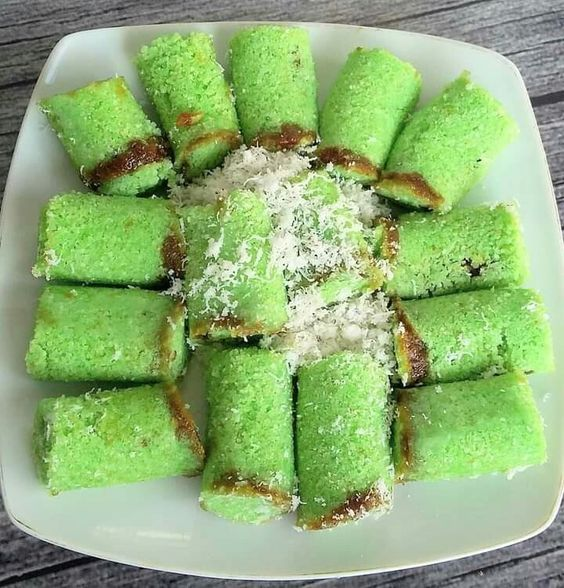
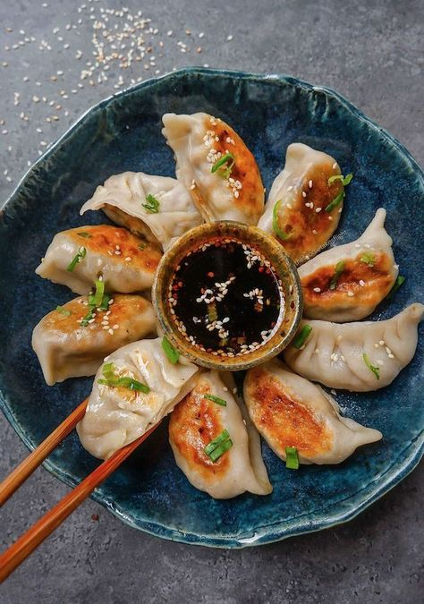
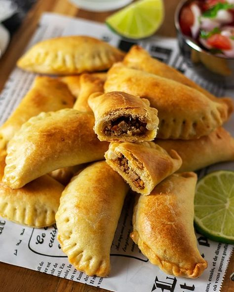
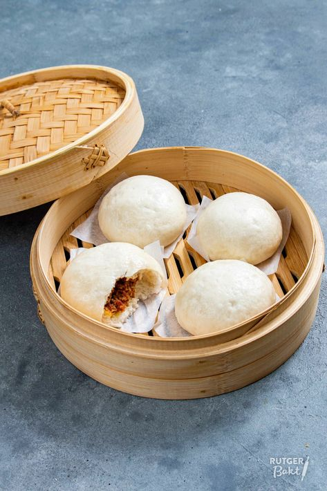
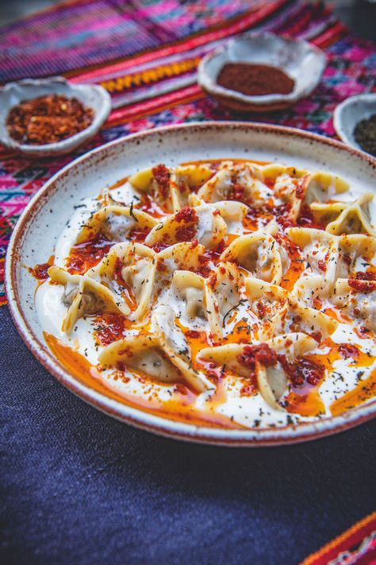
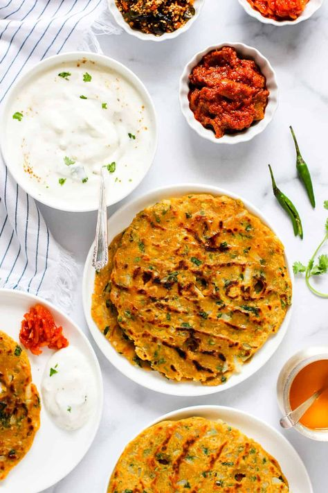
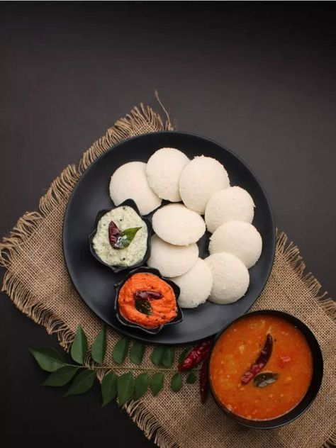
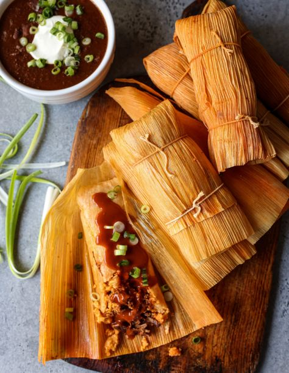
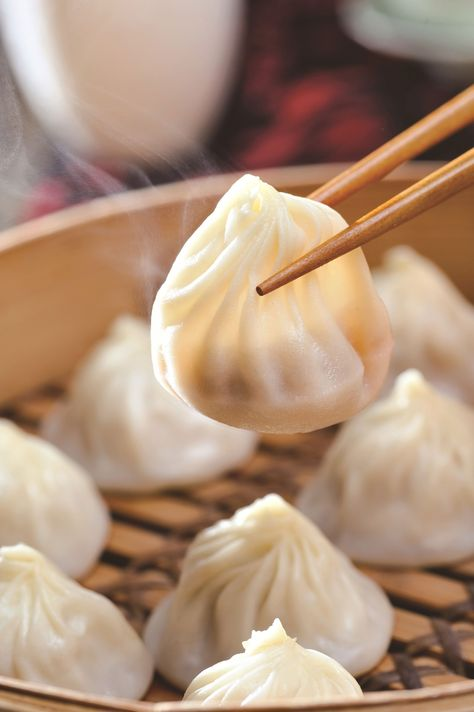
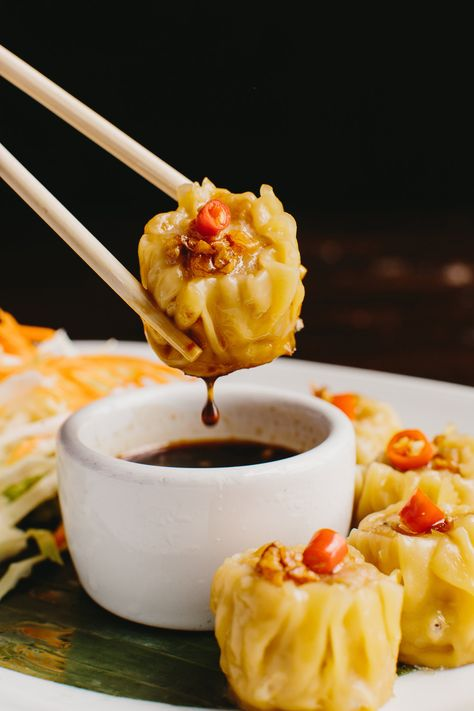

1. Resep Putu Bambu

Bahan:
- 250 gram tepung beras
- 200 ml santan
- 1/2 sendok teh garam
- 100 gram gula merah, serut halus
- Daun pisang untuk alas
Cara Membuat:
- Campurkan tepung beras, santan, dan garam hingga adonan bisa dipadatkan.
- Siapkan cetakan putu bambu yang telah dialasi daun pisang.
- Masukkan sedikit adonan ke dalam cetakan, tambahkan gula merah serut, lalu tutup dengan adonan lagi.
- Kukus selama 15-20 menit hingga matang.
- Angkat dan sajikan.
2. Resep Gyoza

Bahan:
- 200 gram daging ayam cincang
- 100 gram kol, cincang halus
- 2 siung bawang putih, cincang
- 1 sendok makan kecap asin
- Kulit gyoza
Cara Membuat:
- Campurkan daging ayam, kol, bawang putih, dan kecap asin dalam mangkuk.
- Ambil selembar kulit gyoza, beri satu sendok makan adonan, lipat, dan rapatkan.
- Panaskan sedikit minyak di wajan, masak gyoza hingga bagian bawah kecokelatan.
- Tambahkan sedikit air, tutup wajan, dan biarkan hingga air menguap.
- Sajikan dengan saus celup.
3. Resep Empanadas

Bahan:
- 250 gram tepung terigu
- 100 gram margarin
- 1 butir telur
- 200 gram daging giling
- 1 buah kentang, potong dadu
- Bumbu sesuai selera
Cara Membuat:
- Campurkan tepung terigu, margarin, dan telur hingga kalis. Diamkan.
- Tumis daging giling dan kentang dengan bumbu hingga matang.
- Pipihkan adonan, potong bulat, dan beri isian daging.
- Lipat dan rapatkan, lalu goreng hingga kecokelatan.
- Sajikan hangat.
4. Resep Bapao

Bahan:
- 250 gram tepung terigu
- 125 ml air
- 1 sendok makan ragi
- 200 gram daging ayam cincang
- Bumbu sesuai selera
Cara Membuat:
- Campurkan tepung terigu, ragi, dan air, uleni hingga kalis.
- Diamkan selama 1 jam hingga mengembang.
- Tumis daging ayam dengan bumbu hingga matang.
- Ambil sedikit adonan, pipihkan, beri isian daging, dan rapatkan.
- Kukus selama 15-20 menit hingga matang.
5. Resep Manti

Bahan:
- 250 gram tepung terigu
- 1 butir telur
- 200 gram daging giling
- Bawang bombay, cincang
- Bumbu sesuai selera
Cara Membuat:
cukupnya. Rebus
- Campurkan tepung terigu, telur, dan air, uleni hingga kalis.
- Diamkan selama 30 menit.
- Tumis daging giling dan bawang bombay hingga matang.
- Pipihkan adonan, potong kecil, beri isian daging, dan lipat.
- Kukus selama 30 menit dan sajikan dengan saus yogurt.
6. Resep Thalipeeth

Bahan:
- 200 gram tepung jowar
- 1 buah kentang, haluskan
- Bumbu sesuai selera
- Air secukupnya
Cara Membuat:
- Campurkan tepung jowar, kentang, dan bumbu, tambahkan air hingga adonan bisa dipadatkan.
- Pipihkan adonan di atas daun pisang atau talenan.
- Panaskan wajan, masak thalipeeth hingga kecokelatan di kedua sisi.
- Sajikan dengan chutney atau yogurt.
7. Resep Idli

Bahan:
- 200 gram beras
- 100 gram lentil (urad dal)
- Garam secukupnya
Cara Membuat:
- Rendam beras dan lentil selama 6-8 jam, kemudian haluskan hingga menjadi adonan.
- Tambahkan garam dan biarkan selama 8-12 jam untuk fermentasi.
- Tuang adonan ke dalam cetakan idli dan kukus selama 10-15 menit.
- Sajikan dengan sambal atau chutney.
r
8. Resep Tamales

Bahan:
- 250 gram masa harina
- 200 ml kaldu
- 100 gram daging ayam, direbus dan disuwir
- Daun jagung untuk membungkus
Cara Membuat:
- Campurkan masa harina dengan kaldu hingga menjadi adonan yang lembut.
- Ambil selembar daun jagung, letakkan adonan, tambahkan daging, dan lipat.
- Kukus selama 30-40 menit hingga matang.
- Sajikan dengan salsa.
9. Resep Xiaolongbao

Bahan:
- 250 gram tepung terigu
- 150 ml air
- 200 gram daging babi, cincang
- Kaldu agar menjadi sup
Cara Membuat:
- Campurkan tepung terigu dan air, uleni hingga kalis, diamkan selama 30 menit.
- Campurkan daging babi dengan kaldu dan bumbu.
- Pipihkan adonan, beri isian, dan rapatkan.
- Kukus selama 15-20 menit dan sajikan.
10. Resep Hakka Mo

Bahan:
- 200 gram tepung terigu
- 100 gram daging giling
- Bumbu sesuai selera
- Air secukupnya
Cara Membuat:
- Campurkan tepung terigu dengan air hingga menjadi adonan.
- Tumis daging giling dengan bumbu hingga matang.
- Pipihkan adonan, beri isian daging, dan lipat.
- Kukus selama 20 menit dan sajikan.